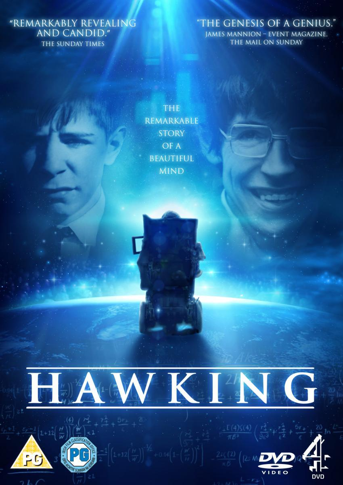

muhammed
hakkımda
- merhaba ben muhammed! ş.urfa da yaşiyorum bilim kurgu ve bunun gibi filimleri izlemeyi ve okumayı çok severim. tam bir stephen hawking ve elon musk hayranıyım
stephen hawking'in 2015 de çıkkan stephen hawking'in 2015'te çıkkan filmi çok severim
- elon musk'ın o hayatınıda çok seviyorum örnek aldığım kişiler bunlardı
- özellikle bir bilim insanı var adam harikalar yaratmış adı nikolas tesla
sevdiğim dizi
- stephen-hawking:her şeyin teorisi
